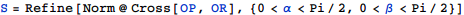

東京大学 2014年 理科 第1問
問題
1辺の長さが1の正方形を底面とする四角柱OABC-DEFGを考える。3点P,Q,Rを、それぞれ辺AE、辺BF、辺CG上に、4点O,P,Q,Rが同一平面上にあるように取る。四角形OPQRの面積をSとする。また、∠AOPをα、∠CORをβとおく。
(1) Sをtan αとtan βを用いて表せ。
(2) であるとき、tan α+tan βの値を求めよ。さらに、α≤βのとき、tan αの値を求めよ。
解答
(1)
求める面積Sはベクトルの外積の大きさだから、

(2)
α,βの具体的な値を求める。
2つある解のどちらもtan α+tan βは同じ値となり、
また、α<βのときのtan αは
補足・感想
(1)はFullSimplifyを使うとと簡約化されてしまうのでRefineを用いた。
本来はtan α+tan βをまとめて計算するところを、具体的にα,βを求めてゴリ押し。